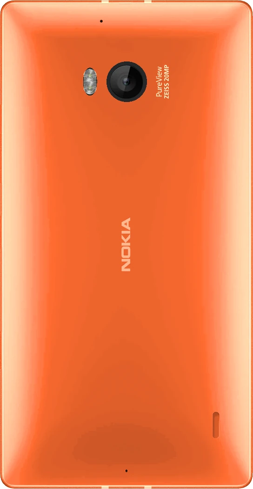

- Ultima build
- 15 novembre 2026
- Android
- 11 (RQ3A.211001.001)
- LineageOS
- 18.1, userdebug, chiavi di test
- Patch di sicurezza
- 5 febbraio 2024
- Kernel
- 3.4.113, LineageOS msm8974
- Chip
- Snapdragon 800 (MSM8974)
- Nome in codice
- martini
- SELinux
- Permissive
Il 930 ha lo stesso chip e la stessa famiglia di firmware Windows Phone del Lumia 1520, quindi il port parte dal codice del 1520. Il 13 novembre 2026 è partito per la prima volta su un vero Lumia 930 (RM-1045): l’installer ha preparato la catena di avvio dal boot manager di Windows del telefono stesso, e Android 11 è arrivato alla schermata di configurazione.
Le build sono provate su un RM-1045. LineageOS funziona senza app Google. Considera queste build sperimentali.
Novità della build di prova 2026-11-15
- Risparmio a schermo spento: il kernel restituisce i voti di clock e di tensione che il firmware lascia attivi. Misurato sul telefono, il consumo a schermo spento passa da circa 235 a circa 160 mA.
- Basi per il VoLTE: lo stack IMS di phh, portato su Android 11, è nella build ma resta spento. Le chiamate usano 2G e 3G come prima.
Stato
- Funziona
- Non funziona ancora
- Da provare
Cosa funziona sul telefono di prova
Display e sistema
- Avvio con UEFI, BootShim e lk1st, partendo dal boot manager di Windows Phone, con un menu fastboot sullo schermo
- Tutti e quattro i core della CPU
- Schermo AMOLED con luminosità e spegnimento
- Touch, doppio tocco per riattivare
Rete e connessioni
- Wi-Fi
- Bluetooth
- NFC
- SIM, dati LTE e SMS
Chiamate e audio
- Chiamate con capsula e microfono
- Altoparlante
- Vibrazione, pilotata attraverso il chip audio come su Windows
Fotocamera e video
- Fotocamera posteriore con autofocus, flash LED e torcia; fotocamera frontale. Foto e video su entrambe
- Riproduzione video con decodifica hardware
Posizione, sensori e batteria
- GPS con fix satellitare: 14 satelliti e 6 m di precisione sul telefono di prova
- Accelerometro, giroscopio e magnetometro, calibrati durante l’uso; sensore di luce e di prossimità
- Ricarica, anche wireless Qi
- ADB
In attesa delle vostre prove
- Altri Lumia 930 oltre al telefono di prova
- Cuffie
Non funziona ancora
- VoLTE. Nelle prove il telefono si è registrato sulla rete IMS solo con impostazioni date a mano, e le chiamate sono ripiegate sul 3G
- Una SIM inserita a telefono acceso viene letta solo dopo un riavvio: il modem non supporta l’inserimento a caldo
- Niente sospensione profonda con questo firmware, quindi in standby la batteria si scarica più in fretta che su Windows
- Una foto con il flash e l’obiettivo coperto lascia il LED acceso finché il servizio della fotocamera non riparte
- SELinux è permissive
Installazione
L’installazione di Android cancella Windows e tutto quello che c’è sul telefono. Leggi tutta la guida prima di iniziare. Installi a tuo rischio: non c’è garanzia, e per tornare a Windows bisogna installare un’immagine di Windows con WPinternals o Windows Device Recovery Tool.
Con l’installer
L’installer del Lumia 1520 supporta anche il 930, su Windows e Linux. Ogni passo è stato eseguito su un vero RM-1045 con Windows Phone 8.1, uno alla volta. L’installer avvia la TWRP del Lumia 930 in RAM e non la scrive mai sul telefono. La sua guida descrive ogni passo.
Ti servono:
- Un Lumia 930 (RM-1045). L’installer controlla il modello e rifiuta il Lumia Icon e il 929 (RM-927), che hanno un firmware loro
- WPinternals, per lo sblocco del bootloader e la modalità mass storage della prima installazione. Funziona solo su Windows, anche se poi usi l’installer su Linux
- Un PC con Windows 10 o 11 (64 bit) o con Linux. Il pacchetto per Windows ha il suo Python; su Linux servono Python 3.8 o più recente, util-linux e ntfs-3g
- Android SDK Platform Tools (adb e fastboot). Se mancano, l’installer propone di scaricarli
- Su Windows, il driver USB di Google
- La batteria sopra il 50% e un buon cavo USB, collegato direttamente al PC
- Per avviare Pulita o Aggiornamento da Android: il debug USB attivo
| Modalità | Si parte da | Cosa fa |
|---|---|---|
| Completa | Windows Phone, sbloccato con WPinternals e in modalità mass storage | Bloccata sul 930 finché non è stata eseguita per intero su un telefono: esegui i suoi passi dagli strumenti avanzati, come qui sotto. Cancellano Windows. Fai il backup che propone l’installer e conservalo, contiene la calibrazione del tuo telefono e l’unica copia esatta di Windows. |
| Pulita | lk1st e le partizioni Android già presenti | Installa la ROM e cancella tutti i dati Android, memoria interna compresa. |
| Aggiornamento | Questa ROM | Installa la nuova build e mantiene i tuoi dati. |
- Sblocca il bootloader con WPinternals su un PC Windows, poi passa il telefono in modalità mass storage.
- Scarica l’installer e metti lo zip della ROM con il suo
SHA256SUMSnella cartellaromdell’installer. La TWRP la scarica l’installer da solo. Avvialo e scegli Lumia 930. - Strumenti avanzati: Backup, poi Firmware, poi Catena di avvio. Il telefono resta in modalità mass storage.
- Riavvia il telefono: si ferma nel menu fastboot di lk1st. Poi Strumenti avanzati > Verifica lk1st.
- Strumenti avanzati > Partizioni Android. È il passo che cancella Windows.
- Modalità Pulita: TWRP in RAM, dati formattati, ROM installata. Il primo avvio richiede qualche minuto.
Ogni passo che scrive sul telefono ti chiede di scrivere una parola di conferma, e ogni file viene controllato con il suo SHA-256 prima dell’uso.
Aggiornamento
Avvia l’installer in modalità Aggiornamento. A mano: arriva a lk1st con adb reboot bootloader, avvia la TWRP e fai il sideload del nuovo zip da Advanced > ADB Sideload, senza cancellare i dati. È normale che il trasferimento si fermi intorno al 47%.
fastboot boot twrp-3.7.0_9-0-martini.img
adb sideload lineage-18.1-20261115-UNOFFICIAL-martini.zipSe resta in bootloop
Se adb vede ancora il telefono, avvia l’installer in modalità Aggiornamento o Pulita: ferma il ciclo con adb reboot bootloader. Altrimenti arriva a lk1st, avvia la TWRP con fastboot boot e rifai il sideload della ROM. Volume su all’accensione apre sempre la modalità flash, la via del ritorno con WPinternals.
Download
- ROM, build di prova 2026-11-15Release su GitHub con lo zip (circa 575 MB) e il suo SHA256SUMS. Lo zip contiene il firmware del telefono; la calibrazione e i dati del modem del tuo telefono li copia l’installer dal telefono stesso
- Installer 0.3.2Per Windows e Linux, in comune con il Lumia 1520
- TWRP per il Lumia 930
twrp-3.7.0_9-0-martini.img, la scarica l’installer quando manca - WPinternalsSblocco del bootloader e modalità mass storage, solo su Windows
Hardware
- Chip
- Qualcomm Snapdragon 800 (MSM8974), quattro core Krait 400 a 2,2 GHz
- Grafica
- Adreno 330
- Memoria
- 2 GB di RAM
- Archiviazione
- 32 GB, senza slot per schede di memoria
- Display
- AMOLED da 5 pollici, 1080 × 1920, 441 ppi
- Fotocamera posteriore
- PureView da 20 MP, sensore da 1/2,5 pollici, f/2.4, stabilizzazione ottica, flash a due LED
- Fotocamera frontale
- 1,2 MP, f/2.4, video a 720p
- Batteria
- 2420 mAh, non removibile, ricarica wireless Qi
- Connessioni
- LTE, Wi-Fi 802.11ac, Bluetooth 4.0, NFC, micro USB
- Modelli
- RM-1045
Dalle specifiche di Nokia (copia archiviata) e da Wikipedia.
Sorgenti
- KernelKernel msm8974 di LineageOS, branch lineage-18.1-martini
- Device treeBranch lineage-18.1, nato come copia dell’albero del Lumia 1520
- VendorBranch lineage-18.1
- Albero comune msm8974Branch lineage-18.1-lumia, in comune con il Lumia 1520
- LumiaPartsApp delle impostazioni del dispositivo, in comune con il Lumia 1520
- Manifest localeTutto quello che serve sopra LineageOS 18.1 per compilarla
- Device tree della TWRPBranch twrp-9.0
- lk1stlk2nd, branch martini
- InstallerPer il Lumia 1520 e il 930
Crediti
Il port del 930 parte da quello del Lumia 1520, quindi chi è citato lì fa parte anche di questo. Per il 930 in particolare:
- Markynose (Mark Buchok): lumia930-linux, con la mappa dell’hardware del 930, la catena di avvio e l’SMP attraverso le mailbox di parcheggio della UEFI.
- 2314372037 (zh/hao): LineageOS 17.1, il primo port Android che si avvia sul 930, usato come riferimento per il percorso dell’altoparlante, lo schema delle partizioni, i tasti e il motore della vibrazione.
- imbushuo (Bingxing Wang): BootShim e l’lk del 930; rickliu2000: Lumia930Pkg.
- Mainline4Lumia (Dominduchami): supporto lk2nd per il 930; Android4Lumia (J0SH1X, sonic011gamer): il kernel e l’lk2nd del 930.
- sonic011gamer: Lumia-Drivers, i pacchetti driver di Windows da cui vengono il firmware del 930 e le impostazioni del Sensor Core.
- Pierre-Hugues Husson (phhusson) e krazey: lo stack IMS open source, con parti di amikhasenko, ewan-xu (AEC3), Langsdorff e TrebleDroid.
- libqmi (freedesktop.org): le definizioni QMI usate per controllare le richieste radio.
- KorelisLabs (lumia-1520-mainline), msm8916-mainline (lk2nd) e René Lergner (HeathCliff, WPinternals).
- LineageOS e TheMuppets, TeamWin (TWRP) e Android4Lumia950 (djokcho, EpicLPer, j0sh1x, sonic011gamer e la community).